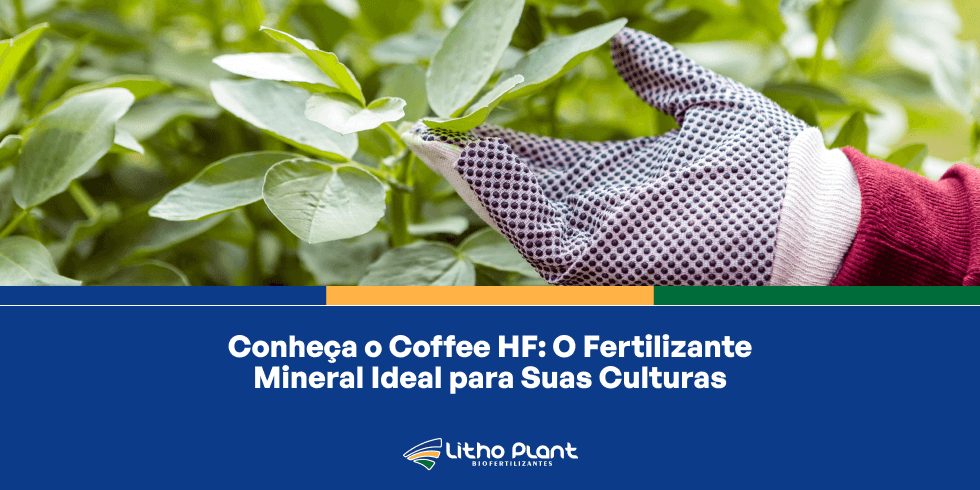
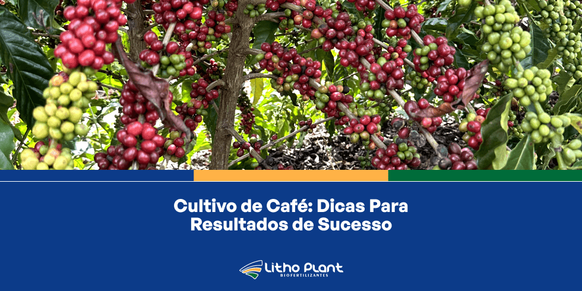

Boas práticas
Benefícios da Primavera Para a Agricultura: Invista em Boas Práticas
A primavera abre um ciclo importante na agricultura, com clima mais favorável ao desenvolvimento das lavouras.
Artigos rápidos com experiências de campo, dicas práticas, produtos e boas práticas de manejo.
Boas práticas
A primavera abre um ciclo importante na agricultura, com clima mais favorável ao desenvolvimento das lavouras.

Produtos
Fertilizante mineral misto desenvolvido para melhorar a saúde e o desempenho do café e de outras culturas.
Sanidade
Entenda como o estresse térmico causa escaldadura e quais manejos ajudam a proteger as plantas.

Biofertilizantes
Produto que fortalece raízes, melhora o microbioma do solo e aumenta a resistência das lavouras.

Institucional
Um resumo dos principais ganhos que produtores observam com as tecnologias Litho Plant.

Café
Recomendações práticas para potencializar produtividade e qualidade do café em diferentes cenários.
Gestão
Práticas para otimizar recursos, reduzir perdas e elevar o desempenho da fazenda.

Produtos
Mostra o papel do magnésio e como o Lithomag ajuda em clorofila, fotossíntese e qualidade de frutos.

Nutrição
Explica as principais formas de perda de nitrogênio e estratégias para reduzir desperdícios no solo.

Proteção solar
Conheça o protetor solar da Litho Plant que ajuda a reduzir escaldadura, proteger folhas e frutos e manter a fotossíntese em dias mais quentes.